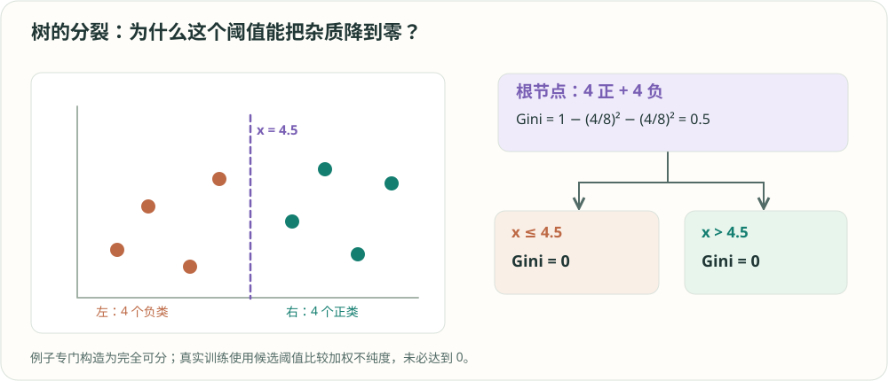
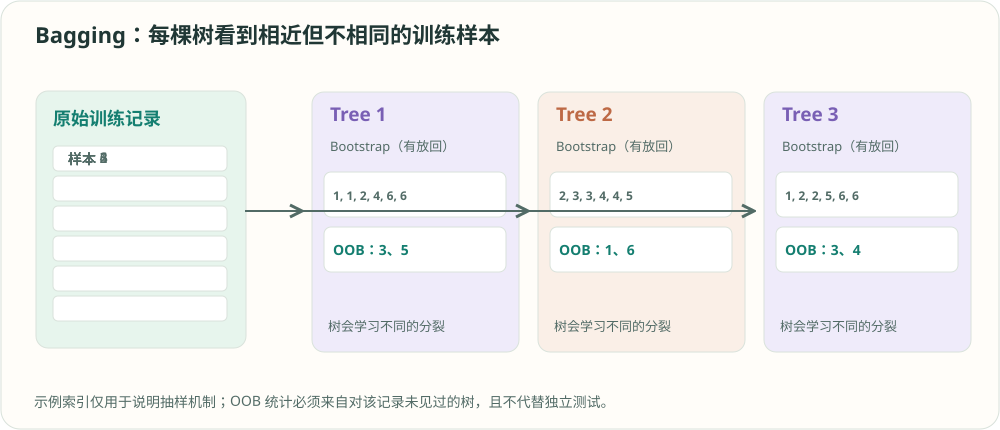

决策树与随机森林：从一次分裂到集成泛化
一棵树是分段的 if/else 规则，却有严格的优化目标；随机森林用自助采样和随机候选特征建立多棵有差异的树。理解分裂、剪枝、袋外估计和特征重要性的限制，才能正确使用它们。
01 · 从一条规则到递归划分
一棵分类树可以看成将特征空间连续划分为一些区域。每个内部节点测试一个特征阈值，例如 x₁≤t；满足条件的记录走左分支，不满足的走右分支。叶节点存储在该区域内的类别频数或平均目标值，之后新样本只需沿一路判断便可得到预测。
常见 CART 分类树采用二叉分裂，在当前节点搜索候选特征和阈值，使分裂后的加权杂质尽可能小。它通常是贪心的局部优化：眼前最佳切分不保证构造出全局最佳的整棵树。样本权重、缺失处理和分裂约束都会改变具体行为，应以使用的实现版本为准。
02 · 为什么 Gini 不纯度能指导分裂
若一个分类节点有 K 类，类别比例为 p₁,…,pₖ，Gini 不纯度定义为 1−Σ pₖ²。纯节点只有一个类别占 100%，其 Gini 为 0；二分类各半时为 0.5。一个候选划分的分裂收益可以表示为父节点杂质减去左右子节点按样本数加权的杂质。
设有 8 个教学样本，4 个正类、4 个负类，父节点 Gini = 0.5。若按某阈值把全部 4 个负例分到左边、4 个正例分到右边，左右节点都纯，其加权 Gini 为 0，分裂收益为 0.5。真实数据往往不能完全分离，因此还要比较候选阈值并检查泛化。

03 · 熵、回归方差与停止规则
另一种分类杂质是熵 H=−Σ pₖ log pₖ，对应信息增益。Gini 与熵对不纯度的测量形式不同，选择结果可能不同，不存在总是更好的单一标准。回归树常用均方误差或其他回归准则，叶节点预测的含义也要随目标函数来理解。
限制 max_depth、min_samples_leaf、min_samples_split 可以降低树对噪声的细分。成本复杂度剪枝 ccp_alpha 则以增加复杂度代价换取更简洁的子树。深度不足可能欠拟合，深度无限制又容易对少量训练样本产生过度适应；参数需要在开发集验证而非测试集调优。
04 · 随机森林为什么要训练不同的树
随机森林通常对原始训练集做多次有放回抽样（bootstrap），每棵树得到一份可重复、可遗漏的训练记录集合；在节点分裂时还随机限制候选特征，降低不同树的高度相关性。分类时汇总各树的类别概率，再选择预测类别；回归时对各树预测取平均。它不是先投票某个“最准确的树”，也不是每棵树都必须见过所有记录。

当样本数很大、每次抽取数量等于训练集大小时，某一条样本未被某棵树抽中的概率为 (1−1/n)ⁿ，极限约为 e⁻¹≈36.8%。这是关于抽样机制的渐近结果，不表示每棵树的具体 OOB 比例一定精确等于 36.8%。
05 · 袋外估计能否替代最终测试集
对某一训练样本，只用没有抽中该样本的树来形成其袋外预测；聚合这些预测，便能得到一个 OOB 评价。设置 bootstrap=True 和 oob_score=True 后，scikit-learn 的随机森林可以提供相应属性。但树数很少、样本太少、时间或实体强相关时，OOB 评价可能不稳定或过于乐观。
如果反复根据 OOB 分数调许多超参数，OOB 也在参与模型选择，不再是完全独立的最终评价。一个冻结后、符合部署分布的保留测试集依然不可省略。对组间依赖明显或未来预测任务，单纯的 bootstrap 也未必保留正确的数据依赖结构。
06 · 特征重要性不等于因果解释
树内部常见的 MDI importance 根据某特征在各节点带来的加权不纯度下降累计重要性，能帮助了解树使用了哪些特征。但它可能偏爱高基数或连续特征；另外，与目标相关的变量未必就是目标变化的原因。
置换重要性把一个特征在保留样本中重新排列，观察模型评分下降多少。它可以用于任何支持预测与评分的模型，并不局限于森林；但强相关的替代特征会使打乱其中一列后模型仍能“借另一列”维持分数，于是单列置换重要性可能偏低。因此应先验证模型确实有预测能力，并结合相关特征组、目标定义、领域知识进行解读。
07 · 从方差与相关性理解集成
如果多个树预测误差高度相关，平均它们带来的方差降低会比误差弱相关时小。因此森林不仅要增加树的数量，也要让树之间适度不同；过分限制候选特征可能提高单树偏差，允许每树总选择相同的强特征又可能增加树间相关性。随机森林并不总是优于单树，尤其当模型解释、延迟或训练成本限制很强时。
分类森林的 predict_proba 是树内叶节点类别估计的聚合，不应直接视为完全校准的真实概率。对概率使用场景应另外查看校准和部署人群是否发生变化。
08 · 可运行：树、森林、OOB 与置换重要性
以下例子使用合成分类数据，并做独立三路划分。树与森林都只在训练集拟合，森林开启 OOB；对验证集作置换重要性解释，测试集只作为最终一次性的保留分数。
import numpy as np
from sklearn.datasets import make_classification
from sklearn.model_selection import train_test_split
from sklearn.tree import DecisionTreeClassifier
from sklearn.ensemble import RandomForestClassifier
from sklearn.inspection import permutation_importance
X, y = make_classification(
n_samples=500, n_features=8, n_informative=4,
n_redundant=2, random_state=31)
Xdev, Xte, ydev, yte = train_test_split(
X, y, test_size=0.20, stratify=y, random_state=31)
Xtr, Xval, ytr, yval = train_test_split(
Xdev, ydev, test_size=0.25, stratify=ydev, random_state=31)
tree = DecisionTreeClassifier(max_depth=4, min_samples_leaf=4, random_state=31)
tree.fit(Xtr, ytr)
forest = RandomForestClassifier(
n_estimators=100, max_depth=7, min_samples_leaf=3,
bootstrap=True, oob_score=True, random_state=31, n_jobs=1)
forest.fit(Xtr, ytr)
permuted = permutation_importance(
forest, Xval, yval, scoring="accuracy",
n_repeats=5, random_state=31)
print("single tree validation:", tree.score(Xval, yval))
print("forest validation:", forest.score(Xval, yval))
print("forest OOB:", forest.oob_score_)
print("validation permutation means:", np.round(permuted.importances_mean, 3))
print("held-out forest accuracy:", forest.score(Xte, yte))
assert 0 <= forest.oob_score_ <= 1
assert permuted.importances_mean.shape == (X.shape[1],)
assert np.all(np.isfinite(permuted.importances_mean))依赖 Python 3.10+、NumPy、scikit-learn。置换重要性允许为负，含义通常是打乱该列后评分反而变高，不是程序错误。n_jobs=1 让本地 CI 在小资源环境中稳定运行。对 OOB、验证和测试分数的差异应首先检查采样协议，而不是简单推断哪一个数字“正确”。
09 · 局限性与可靠来源
树的预测在分裂阈值附近不连续，未见过的外推范围可能失效；类别不平衡、目标随时间变化和强相关特征也会使一般的随机森林评估产生误导。解释“哪个特征重要”之前，应先解释“模型对谁有效”。